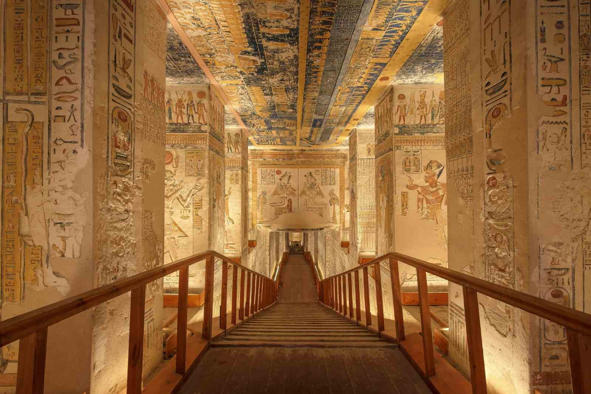
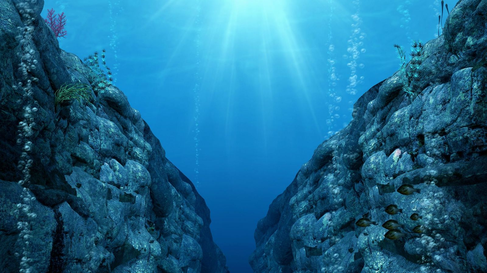

Un equipo de astrónomos ha descubierto un nuevo exoplaneta en la zona habitable de su estrella. Este planeta, denominado Kepler-452b, tiene características similares a la Tierra y podría albergar vida. Los científicos están emocionados por las posibilidades que este descubrimiento ofrece para futuras investigaciones y la búsqueda de vida extraterrestre.
Según los estudios preliminares, Kepler-452b cuenta con una atmósfera rica en oxígeno y nitrógeno, lo que aumenta las probabilidades de que pueda albergar organismos vivos. Además, la distancia entre el planeta y su estrella permite la existencia de agua en estado líquido, un factor clave para el desarrollo de la vida. La NASA ha anunciado futuras misiones para estudiar más a fondo la composición de este exoplaneta.
Un grupo de investigadores ha desarrollado una nueva terapia genética que podría revolucionar el tratamiento de enfermedades hereditarias. Este avance promete ofrecer una cura para dolencias como la fibrosis quística y la distrofia muscular.
La terapia consiste en modificar el ADN defectuoso de los pacientes utilizando tecnología CRISPR, permitiendo corregir los errores genéticos de manera precisa. En los ensayos clínicos, se ha observado una mejora significativa en pacientes con enfermedades raras, lo que abre una nueva puerta para la medicina personalizada. La comunidad científica celebra este avance como un hito en la lucha contra las enfermedades genéticas.
Investigadores han desarrollado un sistema de inteligencia artificial capaz de diagnosticar enfermedades con mayor precisión que los médicos. Esta IA, basada en redes neuronales avanzadas, analiza imágenes médicas y detecta anomalías con un 98% de precisión.
El software ha sido probado en hospitales de todo el mundo y ha demostrado ser capaz de identificar tumores en etapas tempranas, permitiendo tratamientos más efectivos y menos invasivos. Los expertos en salud creen que este avance revolucionará la forma en que se diagnostican las enfermedades en el futuro.
Un equipo de arqueólogos ha desenterrado una tumba intacta de más de 3.500 años de antigüedad en el Valle de los Reyes, Egipto. Se cree que pertenece a un alto funcionario de la dinastía XVIII.
Dentro de la tumba, los investigadores encontraron una serie de objetos valiosos, incluidos amuletos de oro, cerámica decorada y papiros con inscripciones jeroglíficas que podrían revelar nuevos detalles sobre la vida en el antiguo Egipto. Este descubrimiento es considerado uno de los más importantes de la última década y podría aportar información clave sobre las prácticas funerarias de la época.
Científicos han desarrollado un nuevo tipo de panel solar que puede generar electricidad incluso de noche. Este innovador diseño utiliza la energía térmica emitida por la Tierra para seguir produciendo electricidad cuando el Sol se ha puesto.
El avance podría transformar la industria de la energía renovable, permitiendo una producción constante de electricidad y reduciendo la dependencia de combustibles fósiles. Las pruebas iniciales han mostrado resultados prometedores, y se espera que esta tecnología esté disponible comercialmente en los próximos años.
Un grupo de biólogos marinos ha descubierto una nueva especie de criatura luminiscente en la Fosa de las Marianas, el punto más profundo del océano. Este animal, que emite destellos de luz azul y roja, representa una adaptación evolutiva única para la vida en la oscuridad extrema.
Los científicos creen que el estudio de estos organismos podría aportar nuevos conocimientos sobre la vida en condiciones extremas y ayudar en el desarrollo de tecnologías basadas en la bioluminiscencia. Se están planeando futuras expediciones para explorar aún más la biodiversidad oculta en las profundidades del océano.
